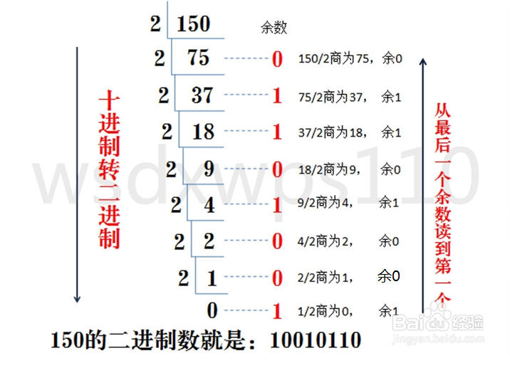
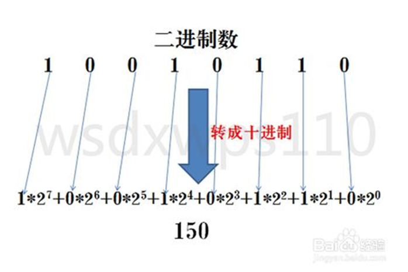
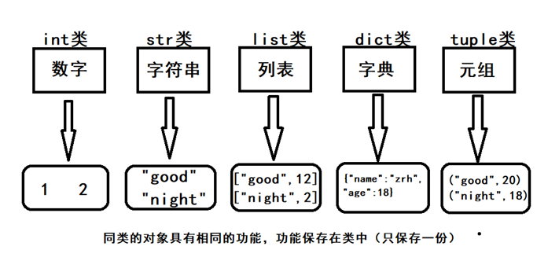
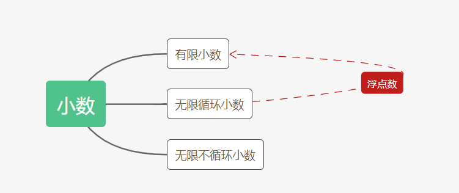
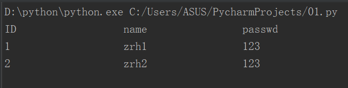
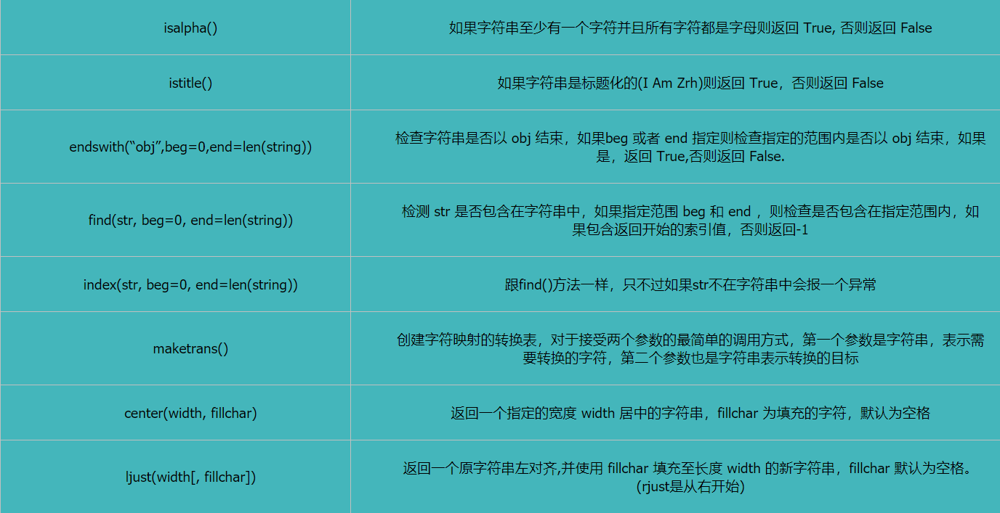
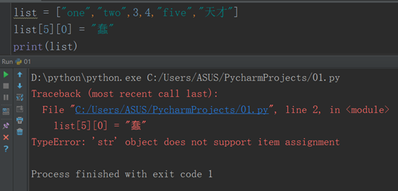

目录：
计算机由美国人发明，最早的字符编码为ASCII，只规定了英文字母数字和一些特殊字符与数字的对应关系。最多只能用 8 位来表示（一个字节），即：2**8 = 256，所以，ASCII码最多只能表示 256 个符号
ascii用1个字节代表一个字符；
unicode常用2个字节代表一个字符，生僻字需要用4个字节；
UTF-8英文字母被编码成1个字节，汉字通常是3个字节有很生僻的字符才会被编码成4-6个字节。
例：
字母x，用ascii表示是十进制的120，二进制0111 1000
汉字中已经超出了ASCII编码的范围，用Unicode编码是十进制的20013，二进制的01001110 00101101。
字母x，用unicode表示二进制0000 0000 0111 1000，所以unicode兼容ascii，也兼容万国，是世界的标准
这时候乱码问题消失了，所有的文档我们都使用但是新问题出现了，如果我们的文档通篇都是英文，你用unicode会比ascii耗费多一倍的空间，在存储和传输上十分的低效
本着节约的精神，又出现了把Unicode编码转化为“可变长编码”的UTF-8编码。UTF-8编码把一个Unicode字符根据不同的数字大小编码成1-6个字节，常用的英文字母被编码成1个字节，汉字通常是3个字节，只有很生僻的字符才会被编码成4-6个字节。如果你要传输的文本包含大量英文字符，用UTF-8编码就能节省空间：
|
字符 |
Ascll |
Unicode |
Utf-8 |
|
x |
01000001 |
00000000 01000001 |
01000001 |
|
中 |
不能表示 |
01001110 00101101 |
11100100 10111000 10101101 |
从上面的表格还可以发现，UTF-8编码有一个额外的好处，就是ASCII编码实际上可以被看成是UTF-8编码的一部分，所以，大量只支持ASCII编码的历史遗留软件可以在UTF-8编码下继续工作。
ASCII:只能存英文和拉丁字符，一个字符占一个字节，8位
gb2312：只能存6700多个中文，1980年
gbk1.0：存2万多字符，1995年
gb18030：存27000中文，2000年
万国码：Unicode：utf-32 一个字符占4个字节
Utf-16 一个字符占2个字节，或两个以上。
Utf-8 一个英文用ASCII码来存，一个中文占3个字节
声明编码 -*- coding：utf-8 -*-
gbk默认不认识utf-8，utf-8是Unicode的一个子集
Unicode 默认向下兼容gbk等
python3内部默认是 unicode，文件默认编码是utf-8
阶段一：现代计算机起源于美国，最早诞生也是基于英文考虑的ASCII
ASCII:一个Bytes代表一个字符（英文字符/键盘上的所有其他字符），1Bytes=8bit，8bit可以表示0-2**8-1种变化，即可以表示256个字符
ASCII最初只用了后七位，127个数字，已经完全能够代表键盘上所有的字符了（英文字符/键盘的所有其他字符），后来为了将拉丁文也编码进了ASCII表，将最高位也占用了
阶段二:为了满足中文和英文，中国人定制了GBK
GBK:2Bytes代表一个中文字符，1Bytes表示一个英文字符
为了满足其他国家，各个国家纷纷定制了自己的编码
日本把日文编到Shift_JIS里，韩国把韩文编到Euc-kr里
阶段三：各国有各国的标准，就会不可避免地出现冲突，结果就是，在多语言混合的文本中，显示出来会有乱码。如何解决这个问题呢？？？
说白了乱码问题的本质就是不统一，如果我们能统一全世界，规定全世界只能使用一种文字符号，然后统一使用一种编码，那么乱码问题将不复存在，
很多地方或老的系统、应用软件仍会采用各种各样的编码，这是历史遗留问题。于是我们必须找出一种解决方案或者说编码方案，需要同时满足：
1、能够兼容万国字符
2、与全世界所有的字符编码都有映射关系，这样就可以转换成任意国家的字符编码
这就是unicode（定长）， 统一用2Bytes代表一个字符， 虽然2**16-1=65535，但unicode却可以存放100w+个字符，因为unicode存放了与其他编码的映射关系，准确地说unicode并不是一种严格意义上的字符编码表
很明显对于通篇都是英文的文本来说，unicode的式无疑是多了一倍的存储空间（二进制最终都是以电或者磁的方式存储到存储介质中的）
阶段四：于是产生了UTF-8（可变长，全称Unicode Transformation Format），对英文字符只用1Bytes表示，对中文字符用3Bytes，对其他生僻字用更多的Bytes去存。
Python 支持格式化字符串的输出 。尽管这样可能会用到非常复杂的表达式，但最基本的用法是将一个值插入到一个有字符串格式符 %s 的字符串中。
格式输出汇总：
1 #第一种
2 val = "我叫%s,今年%d岁，身高%d"%('zrh',20,175)
3 print(val) #运行结果：我叫zrh,今年20岁，身高175
4 #第二种
5 val = "我叫{0},今年{1}岁，身高{2}，我弟弟身高也是{2}"
6 val1 = val.format("zrh",20,175)
7 print(val1) #运行结果：我叫zrh,今年20岁，身高175，我弟弟身高也是175
8 #第三种
9 v = input("your name:") #用户输入姓名
10 val = "我叫{name},今年{age}岁，身高{height}"
11 val1 = val.format(name=v,age="20",height="175") #name = v是用户输入的那个姓名
12 print(val1)
13 #第四种
14 val = "我叫{name},今年{age}岁"
15 dic1 = {"name":"zrh","age":20}
16 val1 = val.format(**dic1)
17 print(val1)
18 #第五种
19 name = "我叫{name},年龄{age}"
20 val = name.format_map({'name':'海角','age':18}) #只有一种写法，里面必须是字典
21 print(val)如果在格式化输出中想要输出%号，就要用到%%格式
例如：
print("我是%s,我的进度已经完成80%%" %('zrh'))输出结果：
我是zrh,我的进度已经完成80%
进制也就是进制位，我们常用的进制包括：二进制、八进制、十进制与十六进制，它们之间区别在于数运算时是逢几进一位。比如二进制是逢2进一位，十进制也就是我们常用的0-9是逢10进一位，16进制的10-15用A、B、C、D、E、F来表示。
1. 十进制转二进制
方法为：十进制数除2取余法，即十进制数除2，余数为权位上的数，得到的商值继续除2，依此步骤继续向下运算直到商为0为止。

2. 二进制转十进制
方法为：把二进制数按权展开、相加即得十进制数。
第一个的1*2的7次方，是因为数位就是8位，8-1=7，依此类推。

Python有五个标准的数据类型：
Numbers（数字） V = 1 int类
Boolean value（布尔值） V = True （bool类）
String（字符串） V = “Good” （str类）
List（列表） V = [“good”,”best”] （list类）
Tuple（元组） V = (“good”,”best”) （tuple类）
Dictionary（字典） V = {“name”:”zrh”,”age”:20} （dict类）

bit_length()表示当前十进制数用二进制数表示时，最少使用的位数。
代码示例：
count = 16
v = count.bit_length()
print(v,"---",count)输出结果：
5 --- 16
注意：
1 count = "1"
2 count1 = "2"
3 print(count+count1) #输出结果：12 字符串的加法是拼接的作用
4 count2 = 1
5 count3 = 2
6 print(count2+count3) #输出结果：3 数字的加法是加法作用
7 #需求，输入一个数字，然后每个数字相加，列入输入152，结果就是1+5+2
8 count4 = "152" #在数字和字符串中只有字符串才可以遍历，所以要把count4转为str类型
9 val = 0
10 for i in range(len(count4)):
11 val += int(count4[i]) #count4[i]是字符串，所以要转为数字才能相加
12 print(val) 浮点数：

对于字符串，执行内置命令后，原来的值不变。
2.1：upper()转换字符串中的小写字母为大写
代码示例：
name = "zrh"
v = name.upper()
print(v,"---",name)输出结果：
ZRH --- zrh
2.2：lower()转换字符串中所有大写字符为小写
代码示例：
name = "ZrH"
v = name.lower()
print(v,"---",name)输出结果：
zrh --- ZrH
2.3：capitalize()将字符串的第一个字符转换为大写
代码示例：
name = "zrh"
v = name.capitalize()
print(v,"---",name)输出结果：
Zrh --- zrh
2.4：strip()去除首尾的内容 空格、换行符、制表符、指定内容
代码示例：
name = " zrh "
v = name.strip()
print(v+"---",name)输出结果：
zrh--- zrh
1 name_1 = "\tzrh\t"
2 print(name_1)
3 print(name_1.strip())输出结果：
zrh
zrh
1 name_1 = "zrh"
2 print(name_1)
3 print(name_1.strip("h"))输出结果：
zrh
zr
2.5：lstrip()截掉字符串左边的空格或指定字符
2.6：rstrip()删除字符串字符串末尾的空格
2.7：replace(str1, str2 , max)将字符串中的 str1 替换成 str2,如果max指定，则替换不超过max次
代码示例：
content = "人生自古谁无死，早死晚死都得死"
v = content.replace("死","*",2)
print(v,"---",content)输出结果：
人生自古谁无*，早*晚死都得死 --- 人生自古谁无死，早死晚死都得死
2.8： len(string)返回字符串长度
代码示例：
content = "人生自古谁无死，早死晚死都得死"
v = len(content)
print(v)输出结果：
15
2.9：[]根据索引取值
代码示例：
#索引值从0开始计算不是从1
content = "人生自古谁无死，早死晚死都得死"
v = content[0] #取字符串的第一个字符
v1 = content[-1] #-代表从后往前找，1代表第一个，所以-1代表正向的最后一个
v2 = content[0:5] #从0开始取到索引值为4的对象，不包括索引值为5的对象，相当于数学中的左闭右开区间
v3 = content[8:] #从索引值为8的对象开始取到最后一个
v4 = content[0:15:2] #从0开始隔一个取一个，一直取到14，2表步长表示隔一个取一个，3就表示隔2个
print(v,v1,v2,v3,v4)输出结果：
人 死 人生自古谁 早死晚死都得死 人自谁死早晚都死
2.10 ：split(“str”,num) （）里没有参数的话，默认是空格
以 str 为分隔符截取字符串，如果 num 有指定值，则仅截取 num+1 个子字符串
代码示例:
content = "人生自古谁无死，早死晚死都得死"
v = content.split("死",2)
print(v)输出结果：
['人生自古谁无', '，早', '晚死都得死']
2.11 ：.isdecimal()判断当前字符串中是否全部都是数字
代码示例:
v = "a123"
c = v.isdecimal()
print(c)输出结果：
False
补充：
a = "good 1 night 2"
a.isdecimal() #如果a中只有十进制字符，则返回True，否则为False
a.isdigit() #如果a中的所有字符都是数字，并且在S中至少有一个字符，则返回True
a.isnumeric() #如果a中只有数字字符，则返回True，否则为False
2.12 ：join(seq) 以指定字符串作为分隔符，将 seq 中所有的元素(的字符串表示)合并为一个新的字符串
seq里的元素必须是字符串，不能是数字，数字和字符串（前面的“_”）不能相加，
代码示例:
list1 = ['alex','zrh','sdv']
a = '_'.join(list1) #这里的_就表示用_连接
b = "".join(list1) #""里什么都没有表示直接连接
print(a)
print(b)输出结果：
alex_zrh_sdv
alexzrhsdv
2.13：把字符串转换成字节encode（）
name = "天下"
name.encode("utf-8") #把字符串（Unicode）转换成字节（utf-8格式）
name.encode("gbk") #把字符串（Unicode）转换成字节（gbk格式）2.14：count()
count() 方法用于统计字符串里某个字符出现的次数。可选参数为在字符串搜索的开始与结束位置。
1 name = "ooxxooxxooxx"
2 print(name.count("o"))
3 #有两个参数，不写默认为print(name.count("o",0,len(name)))
4 #0表示条件统计起始索引值，len(name)表示终止索引值2.15：expandtabs() 方法把字符串中的 ('\t')转为空格，('\t')默认的空格数是 8
\t 表示横向制表符 \n表示换行符
1 name = "ID\tname\tpasswd\n1\tzrh1\t123\n2\tzrh2\t123"
2 val = name.expandtabs(20) #20表示连同\t前面的内容一共占20个字符的位置
3 print(val)输出结果：

2.16其他不常用的方法汇总：

1.数字转字符串 str(对象)
2.字符串转数字 int(对象)
对象必须是形为数字，才能转换
Int(string)就会报错
3.数字转布尔值 bool(对象)
bool(0)是False
其他不是0的数都是True
但是在其他方面true = 1 flase = 0
4.字符串转布尔值 bool(对象)
bool(“”)是False
其他任何字符串都是True
注意：
代码示例：
a = 9 or 2>3
print(a)输出结果：
9
代码示例：
a = 0 or 2>3
print(a)输出结果：
False
代码示例：
a = 0 or 6
print(a)输出结果：
6
代码示例：
a = 0 or 2<3
print(a)输出结果：
True
5.元组转列表
v = (1,2,3)
val = list(v)6.列表转元组
v = [1,2,3]
val = tuple(v)7.列表转字符串
v = ["1","2","3"]
result = "".join(v)
print(result)列表是Python中最基本的数据结构。列表中的每个元素都分配一个数字 - 它的位置，或索引，第一个索引是0，第二个索引是1，依此类推。
创建一个列表，只要把逗号分隔的不同的数据项使用方括号括起来即可。
如下所示：
list = ["one","two",3,4,"five"]列表可以进行 增、删、改、查。如果列表只有一个对象，在后面也要加上，
列表中的元素可以是 数字、字符串、布尔值、列表（列表的嵌套）
复制列表：
a = [1,2,3]
b = a[:] #[:]是复制列表
print(a,b) 1.查 切片：
list[1:] #从1开始取到最后
list[1:-1] #从1开始取到倒数第二值
list[1:-1:1] #从左到右一个一个去取，取到倒数第二值
list[1::2] #左到右隔一个去取
list[3::-1] #从3开始从右到左一个一个取，注意索引值不变2.增 添加：
append(“str”)将数据插到最后一个位置
代码示例：
list = ["one","two",3,4,"five"]
list.append("six")
print(list)输出结果：
['one', 'two', 3, 4, 'five', 'six']
append()注意事项：
1 list1 = [11,22,33]
2 val = list1.append(44)
3 print(val)
4 #这里返回的是None，对于列表来说，执行方法之后改变的是原来的值，变量接收不到
2.2：insert()
根据索引值位置将数据插入到任意一个位置
代码示例：
list = ["one","two",3,4,"five"]
list.insert(2,"two2") #想把新对象插在什么位置就输入相应的索引值
print(list)输出结果：
['one', 'two', 'two2', 3, 4, 'five']
3.改 修改：
想要修改首先得用切片把相应的值取出来，在进行赋值即可。
代码示例：
list = ["one","two",3,4,"five"]
list[1] = 2 #将索引值为1的对象取出来，再重新赋值
print(list)输出结果：
['one', 2, 3, 4, 'five']
需求：将list = ["one","two",3,4,"five"]这个列表里的two 和 4 修改成 2 和 four
代码示例：
list = ["one","two",3,4,"five"]
list[1:4:2] = [2,"four"]
print(list)输出结果：
['one', 2, 3, 'four', 'five']
注意：在list[1:4:2] = [2,"four"]中，因为list[1:4:2]输出得是一个列表，所以等号右边也必须是个列表
4.删 删除：
4.1：remove
remove只能删除一个，并且（）里填写的是对象内容
代码示例：
list = ["one","two",3,4,"five"]
list.remove("two") #删除two
print(list)输出结果：
['one', 3, 4, 'five']
4.2 ：pop
pop删除的时候（）里是填写索引值，并且还可以将删除数据返回出来，如果括号里面不填索引值，即pop（），则默认删除最后一个值。
代码示例：
list = ["one","two",3,4,"five"]
a = list.pop(1) #删除 two
print(list,a)输出结果：
['one', 3, 4, 'five'] two
4.3 ：del什么都可以删除
代码示例：
list = ["one","two",3,4,"five"]
del list[0] #删除 one
print(list)输出结果：
['two', 3, 4, 'five']
5.列表的其他操作
5.1 ：count:计算某元素出现次数
代码示例：
list = ["one","two",3,4,"five"]
v = list.count("two") #计算two出现的次数
print(v)输出结果：
1
5.2：extend：用于在列表末尾一次性追加另一个序列中的多个值，括号中必须是可迭代对象，可以理解为批量的append（）
代码示例：
a = [1,2,3]
b = [4,5,6]
a.extend(b) #把b加到a里面
print(a)
print(b)输出结果：
[1, 2, 3, 4, 5, 6]
[4, 5, 6]
5.3：index根据内容找位置,输出得是第一个匹配内容的索引位置
代码示例：
list = ["one","two",3,4,"five"]
T = list.index("five") #查找five的索引值
print(T)输出结果：
4
5.4 合集
1.reverse：用于反向列表中元素
2.sort：对原列表进行排序
reverse -- 排序规则，reverse = True 降序（由大到小）， reverse = False 升序（由小到大）（默认）
3.in：查一个数据在不在列表内
4.type：身份判断：判断一个对象是不是列表
代码示例：
list0 = ["one","two",str(3),str(4),"five"]
list0.reverse() #反向列表中元素
print(list0)
list0.sort(reverse=True) #由大到小de对原列表进行排序
print(list0)
a = "six" in list0 #判单six在不在列表里
print(a)
b = type(list0) is list #判断list0是不是列表
print(b)输出结果：
['five', '4', '3', 'two', 'one']
['two', 'one', 'five', '4', '3']
False
True
6.列表练习题：
list = ["one","two",3,4,"five","天才"]
把list列表中的天才的 天 改成 蠢
代码示例：
list = ["one","two",3,4,"five","天才"]
v = list[5].replace("天","蠢")
list[5] = v
print(list)输出结果：
['one', 'two', 3, 4, 'five', '蠢才']
注意：字符串不能通过索引值修改，只能通过索引值取出来。（⬇）

7.补充：
需求：索引为奇数值，删除
注意：删除列表元素时，会影响列表长度，从而使得索引取值时，容易出现错误。
li = [11,22,33,44,66]
# 解决方案一：
li = [11, 22, 33, 44, 66] # 0
new_list = []
for i in range(0,len(li)):
if i%2 == 0:
new_list.append(li[i])
li = new_list
print(li)
# 解决方案二：
li = [11, 22, 33, 44, 66] # 0
for i in range(len(li)-1,-1,-1): # 4,0
if i%2 == 1:
del li[i]
print(li)
#解决方案三：切片+步长
li = [11, 22, 33, 44, 66]
del li[0:4:2]
print(li) Python 的元组与列表类似，不同之处在于元组的元素不能修改。
元组使用小括号，列表使用方括号。
元组创建很简单，只需要在括号中添加元素，并使用逗号隔开即可。
1. 创建空元组
tup1 = ()2. 元组中只包含一个元素时，需要在元素后面添加逗号，否则括号会被当作运算符使用：
代码示例：
tup1 = (50)
print(type(tup1)) # 不加逗号，类型为整型
tup1 = (50,)
print(type(tup1)) # 加上逗号，类型为元组输出结果：
<class 'int'>
<class 'tuple'>
3. 元组可以使用下标索引来访问元组中的值
4. 可以对元组进行连接组合
5.元组可以计算长度len()
6.元组中的元素值是不允许删除的，但我们可以使用del语句来删除整个元组
7.重点：
元组的儿子不能修改，但是孙子可以，元组的元素不能修改，但是元组的元素的元素是可以修改的。
代码示例：
tuple1 = ("one","two","three",[1,2,"zrh"],(1,2,3),"four")
tuple1[3][1] = 3
print(tuple1)
tuple1[3].append("q")
print(tuple1)输出结果：
('one', 'two', 'three', [1, 3, 'zrh'], (1, 2, 3), 'four')
('one', 'two', 'three', [1, 3, 'zrh', 'q'], (1, 2, 3), 'four')
字典是另一种可变容器模型，且可存储任意类型对象。
字典的每个键值(key=>value)对，用冒号(:)分割，每个对之间用逗号(,)分割，整个字典包括在花括号({})中
键必须是唯一的，但值则不必。
值可以取任何数据类型，但键必须是不可变类型。
不可变类型：整型、字符串、元组
可变类型：字典、列表
格式：变量名 = {键:值,键:值}
代码示例:
dict1 = {
"name":"zrh",
"age":20,
"height":75
}1.：dict.get
1.1通过键取值
代码示例：
dict1 = {
"name":"zrh",
"age":20,
"height":75
}
print(dict1.get("name"))输出结果：
zrh
1.2（）参数，如果键不存在，就用后面的结果当作默认值。
代码示例：
dict1 = {
"name":"zrh",
"age":20,
"height":75
}
print(dict1.get("key",999))输出结果：
999
2.：dict.keys() 、 dict.values() and dict.items()
经常和for循环一起使用
字典在for循环的时候尽量不要用两个变量去分别接收 键 和 值，这样会造成内存负荷过大，可以先遍历键，然后通过键去找值
代码示例：
dict1 = {
"name":"zrh",
"age":20,
"height":75
}
a = dict1.keys() #查看所有键
print(type(a)) #查看a的类型
print(a)
print(dict1.values()) #查看所有值
print(dict1.items()) #查看所有键值对输出结果：
<class 'dict_keys'>
dict_keys(['name', 'age', 'height'])
dict_values(['zrh', 20, 75])
dict_items([('name', 'zrh'), ('age', 20), ('height', 75)])
for循环注意事项：
1 dict1 = {}
2 for key in dict1:
3 pass
4 for key in dict1.items():
5 pass
6 for key in dict1.keys():
7 pass
8 for key in dict1.values():
9 pass注意dict1后面括号的有无
3.增加键值对
代码示例：
dict1 = {
"name":"zrh",
"age":20,
"height":75
}
dict1["hobby"] = "eat"
print(dict1)输出结果：
{'name': 'zrh', 'age': 20, 'height': 75, 'hobby': 'eat'}
如果增加的键已经存在，那就是改的功能。
4.删除
代码示例：
dict1 = {
"name":"zrh",
"age":20,
"height":75
}
del dict1["name"] #删除指定键值对
print(dict1)
dict1.clear()
print(dict1) #清空字典中所有键值对，但空字典还存在
dict2 = {
"name":"zrh",
"age":20,
"height":75
}
a = dict2.pop("name") #通过键去删除，并可以返回相应的值
print(a)
print(dict2)
b = dict2.popitem()
print(b)
print(dict2) #随机删除一对键值对，并且返回相相应键值对输出结果：
{'age': 20, 'height': 75}
{}
zrh
{'age': 20, 'height': 75}
('height', 75)
{'age': 20}
5.嵌套
字典里面可嵌套字典或者列表都可以，列表页都可以嵌套字典。
在修改时，遇到字典用键，遇到列表用索引值，然后查找出来之后赋值即可，其他操作一样，反正一句话：
遇到字典用键，遇到列表用索引值。
6.update()用于将括号中的键值对添加到目标对象中，如果括号中的键在目标对象中存在，则更新目标对象的值
1 dict1 = {
2 'k1':'v1',
3 'k2':'v2',
4 'k3':'v3'
5 }
6 dict1.update({'k4':'v4','k1':'v11'})
7 print(dict1)
8 #输出结果：{'k1': 'v11', 'k2': 'v2', 'k3': 'v3', 'k4': 'v4'}7.fromkeys（）创建字典
1 #fromkeys使用的时候不是文件名. 是用dict.来调用
2 val = dict.fromkeys(['k1','k2','k3'],666) #将666作为值赋给K1 K2 K3三个键
3 print(val) #输出结果{'k1': 666, 'k2': 666, 'k3': 666}
4 val['k1'] = 999 #给数字重新赋值，在内存中重新开辟一块内存用来储存999，然后k1指向999，原来的k2 k3值不变
5 print(val) #输出结果{'k1': 999, 'k2': 666, 'k3': 666}
6
7 val = dict.fromkeys(['k1','k2','k3'],[])
8 val['k1'].append(666)
9 val['k2'].append(999)
10 #k1 k2 k3指向的是同一个值，即[]，每次往里加内容的时候 k1 k2 k3 的值都会发生变化
11 print(val) #输出结果{'k1': [666, 999], 'k2': [666, 999], 'k3': [666, 999]}
12
13 val = dict.fromkeys(['k1','k2','k3'],[])
14 val['k1'].append(666)
15 val['k1'] = [1,2,3] #这里是重新赋值操作，在内存中重新开辟一块空间储存[1,2,3],k1指向他，k2 k3值不变
16 print(val) #输出结果{'k1': [1, 2, 3], 'k2': [666], 'k3': [666]}8.补充
# 题：dic = {'k1':"v1",'k2':'v2'}把key="k1",键值对删除
del dic['k1']
# 题：dic = {'u1':"v1",'k2':'v2','k3':'v3'}把key中存在k,键值对删除
dic = {'u1':"v1",'k2':'v2','k3':'v3'}
# 不要在循环当前字典的过程中，修改当前字典大小
错误方式：
for key in dic:
if 'k' in key:
del dic[key]
正确方式 ：
dic_key_list = []
for key in dic:
dic_key_list.append(key)
for row in dic_key_list:
if 'k' in row:
del dic[row]
print(dic) 、